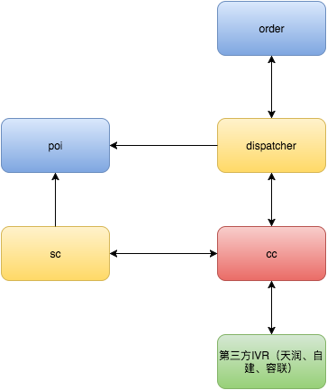
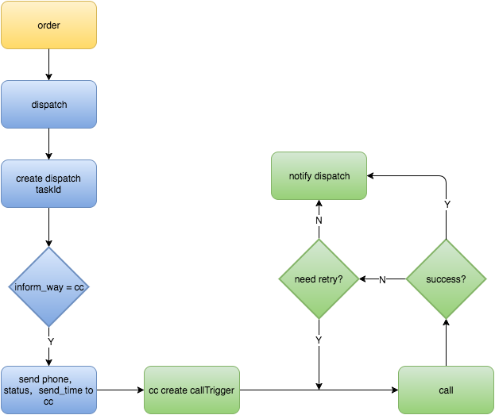
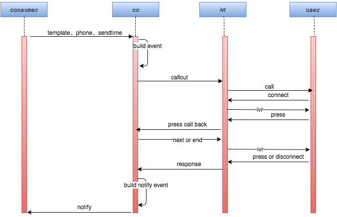
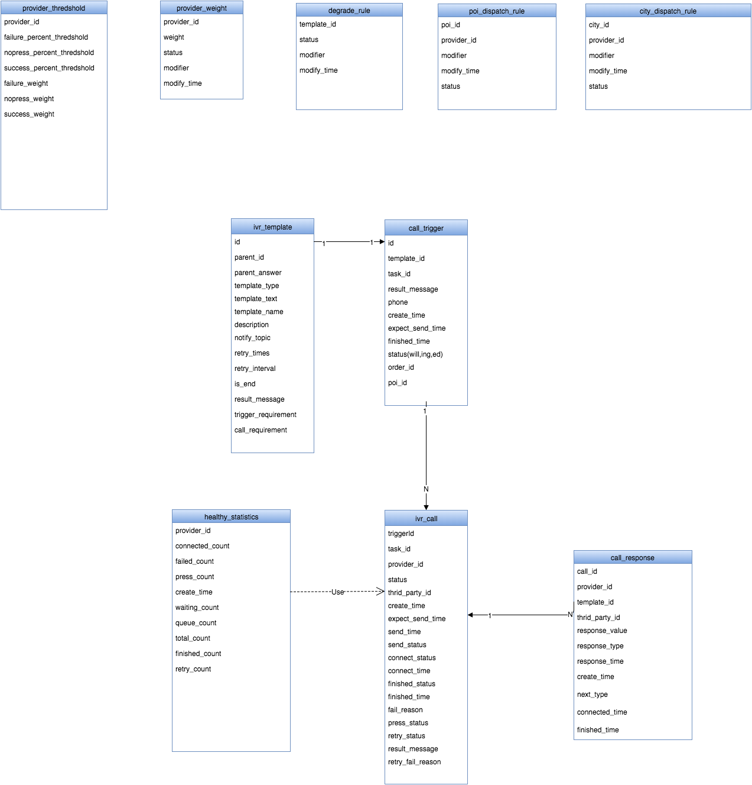
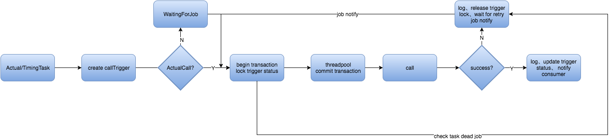
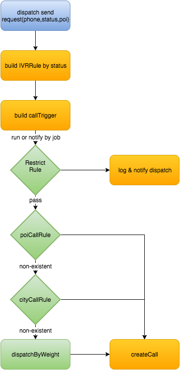
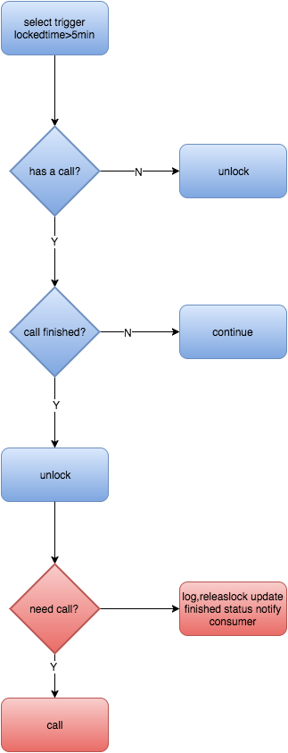

声讯平台设计201703
1.概述
背景
IVR(Interactive Voice Response)即互动式语音应答，是一种功能强大的电话自动服务系统。它用预先录制或TTS文本转语音技术合成的语音进行自动应答，提供一种为客户进行菜单导航的功能。您只须调用外呼接口或呼入的方式即可进入服务中心，可以根据语音文件收听播放的提示音，也可以根据用户输入的内容播放语音信息。
IVR声讯服务是餐饮、酒旅预定业务重要的通知渠道之一，从之前rs-cc-web设计和使用过程中发现了一些问题有待完善。
本次系统设计主要解决以下问题：
1）以声讯平台为中心，外接多家IVR服务商，同时利用自身的健康检查机制，提高声讯服务高可用。
2）将呼叫服务与调度服务解耦。
服务依赖
重要功能流程
1）订单通知声讯服务流程
2）声讯服务与第三方交互过程
2.ER图
3.数据库设计
4.功能概览
1）配置：商家权重配置、开关配置、根据配置进行分流
2）构建：事件树构建，对外暴露CCEventTemplateEnum枚举类，并根据Template生成CalloutEvent
3）呼出：scheduler触发callout，每个provider对应一个calloutServiceImpl 和 factory，cc内callout失败重试。
4）回调：每个provider对应一个callbackServiceImpl 和 factory，按照事件树进行，记录结果，并完成外部回调。
5.关键功能详细设计
callTrigger分配 → 单机处理callTrigger → dispatch解释callrule→ call → 等待回调(成功)/job(失败)
1）集群内callTrigger分配
1.按pigeon负载均衡策略接收task的机器完成自身trigger处理流程,增加重试job将未处理的task重新请求分配
2）单机callTrigger处理流程
3）callcenter内分流dispatch设计
依次校验 服务降级开关（restrict rule）、poiCallRule、cityCallRule 来判断callTrigger是否产生call，provider是哪个。如果没有适配到provider则使用权重策略分流：
1.库存式，根据权重生成总计1W（MCC配置，可以影响健康检查反馈实时性）个call库存，打乱后，放入tair中，每次call消耗库存（待确定tair的原子性，不过影响不大）
2.实时根据权重随机分配
4)job设计
a.trigger触发call job 1min/次
select * from trigger where send_time > now() and status = 'not send' and handler = 'self';
查询到达预约时间并且还未处理的自己trigger , 触发call
b.trigger锁释放job 1min/次
c.health monitor job 1min/次
统计call的count(success)、count(fail)、count(nopress) group by provider
update provider_weight by provider_weight_threshold
weight只减按比例减不增，达到阈值时，降低weight，发送邮件、大象，与第三方确认恢复后人工恢复